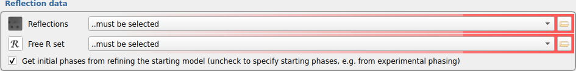
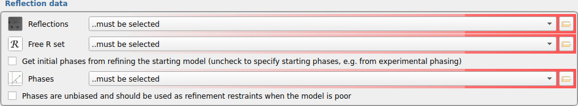
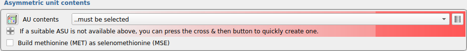
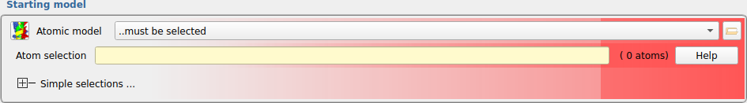
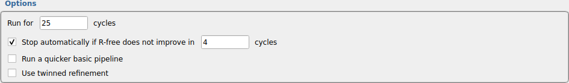

ModelCraft¶
ModelCraft is an automated model-building pipeline for X-ray crystallography. It is based on the BUCCANEER and NAUTILUS model-building pipelines, but with the following enhancements:
Building of protein, RNA and DNA in a single pipeline.
Prelimary refinement of the input model using SHEETBEND.
Machine-learned pruning of protein residues and chains.
Density modification using PARROT and dummy-atom addition.
Addition of water molecules using COOT.
Running for an increased number of cycles with automatic stopping criteria.
Selecting the best output model from all cycles.
Final rebuilding of side chains using COOT.
Pipeline¶
If a starting model was provided, ModelCraft refines it with shift-field refinement using SHEETBEND followed by 10 cycles of REFMAC. A single cycle of ModelCraft then consists of the following seven steps:
Prune incorrect protein chains, residues and side chains using COOT followed by 5 cycles of REFMAC. This step is not performed on the first cycle or if the resolution is 2.3 Å or worse.
Density modification using Parrot.
Add dummy atoms using COOT followed by 10 cycles of REFMAC. The dummy atoms are only used as a tool for phase improvement and are discarded after refinement. The dummy atom refinement is only accepted if it produces a lower free-R factor. Otherwise, the map from the previous step will be used.
Build protein using BUCCANEER followed by 10 cycles of REFMAC.
Prune incorrect protein chains using COOT followed by 5 cycles of REFMAC.
Build RNA and DNA using NAUTILUS followed by 10 cycles of REFMAC.
Add waters using COOT followed by 10 cycles of REFMAC. As in the third step, the model with waters is only accepted if it has a better R-free than the model without waters.
The best model from all cycles is chosen as the output. If the resolution is better than 2.5 Å and R-work is better than 30% at the end of the pipeline, ModelCraft rebuilds side chains that are missing or predicted to be incorrect using COOT followed by 5 cycles of REFMAC. This side chain rebuilding step is performed once at the end of the pipeline to fix side chains.
Input¶

Reflections and a free-R set must be selected in the Reflection data panel. An initial set of phases is also required in order to produce a map for model-building. However, if starting after molecular-replacement, the initial phases for building would usually come from refinement of the placed model, and this is handled internally in the pipeline.

If you would like to specify a different set of starting phases, for example if you have done experimental phasing or density modification using a program such as ACORN, then uncheck the box to the left of “Get initial phases from refining the starting model” and select the phases. Density modification does not need to be done in the case of experimental phases as PARROT is used internally. If the phases do not contain model bias, then check the bottom box to use an MLHL likelihood calculation in REFMAC. This is only used at the start of the pipeline until R-free gets to 35% or better.

The asymmetric unit (AU) contents need to be selected. There is a “Define AU contents” task for this purpose, which can be run though the Task menu or by clicking the plus button on the left of the message followed by the “New AU contents” button. The AU contents provides two pieces of information for the pipeline: the protein, RNA and DNA sequences to be built by BUCCANEER and NAUTILUS, and the number of copies to calculate the the solvent fraction for PARROT. Check the “Build methionine (MET) as selenomethionine (MSE)” box if the protein is a selenomethionine derivative.

A model must be provided if it is the source of the starting phases, but a starting model can still be specified otherwise. It may be helpful to remove incorrect parts of the model before starting, instead of relying on the protein pruning steps within ModelCraft. Including non-incorporated heavy atoms in the input model (e.g. not S or Se that are part of the protein) should also improve the phases. ModelCraft will avoid clashes with these atoms so only include atoms if you are confident of their positions. A sub-selection of the model can be made using the “Atom selection” widget.

By default, the pipeline will run for up to 25 cycles, stopping automatically if the model does not improve for 4 cycles, but these numbers are adjustable. It may help to run for more cycles in difficult cases. Uncheck the box to the left of “Stop automatically” to make the pipeline run to the full number of cycles. There is also an option to run a quicker basic pipeline that only uses BUCCANEER, NAUTILUS and REFMAC (although PARROT and SHEETBEND are still used on the first cycle if applicable). Finally, there is an option to use twinned refinement, but this should only be done if you are sure your crystal is twinned.